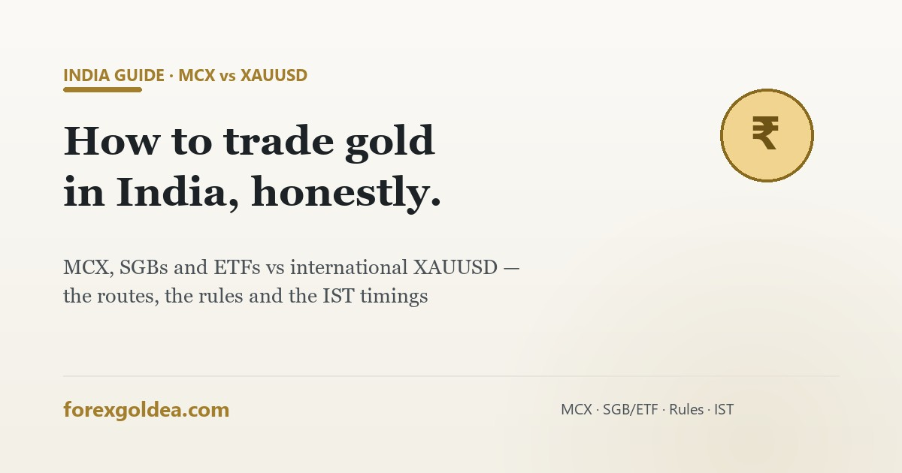

How to trade gold in India: MCX, XAUUSD and the rules — honestly

India buys more gold than almost any nation on earth — and Indian traders googling 'how to trade gold' get the most confusing answers on the internet, because two completely different worlds share the same words. Here's the honest map: what's fully regulated, what's a grey zone, and what the clock says in IST.
Lane 1: MCX — India's regulated gold trading floor
The Multi Commodity Exchange (MCX) is where leveraged gold trading is fully legal and SEBI-regulated in India. You trade through any registered broker (Zerodha, Upstox, Angel One etc.) with rupee settlement and Indian tax treatment.
| Contract | Size | Practical note |
|---|---|---|
| Gold (big) | 1 kg | Institutional-scale margins — lakhs |
| Gold Mini | 100 g | The serious-retail standard |
| Gold Guinea | 8 g | Small-ticket entry |
| Gold Petal | 1 g | Smallest — learning-sized |
Timings: Monday–Friday, roughly 9:00 AM to 11:30/11:55 PM IST — deliberately long so Indian traders can react to London and New York moves. MCX gold tracks the same global price drivers we map in what moves gold, converted through USD/INR.
Lane 2: The investment routes (simplest and safest)
- Gold ETFs — exchange-traded, demat-held, cheapest ongoing costs; buy like a share.
- Sovereign Gold Bonds (SGBs) — government-issued with 2.5% annual interest; new issuance has been paused, but existing bonds trade in the secondary market.
- Digital gold — app-based fractional gold; convenient, but check custody terms and spreads.
These are ownership — one-direction, unleveraged — the investing side of the split we explain in honest return math.
Lane 3: International XAUUSD CFDs — the honest grey-zone section
This is the world most "gold trading" content online actually describes — MT4/MT5 platforms, XAUUSD, 0.01 lots, leverage — and for Indian residents it carries a regulatory reality that affiliate sites routinely skip:
Mechanically, everything on this site about XAUUSD — spreads, leverage, market hours in IST, EAs — describes this lane accurately. Legally, the lane itself is the question, exactly as we framed venue-vs-activity in is automated trading legal.
MCX vs XAUUSD side by side
| MCX gold | International XAUUSD CFD | |
|---|---|---|
| Regulation for Indians | ✅ SEBI — full domestic protection | ⚠️ Grey zone — no Indian regulatory cover |
| Currency | INR (includes USD/INR effect) | USD |
| Sizes | 1g to 1kg contracts | 0.01 lots (1 oz) upward |
| Hours (IST) | ~9:00 AM–11:30 PM Mon–Fri | Nearly 24/5; prime 6:30–10:30 PM |
| Both directions | ✅ Futures/options | ✅ Long/short CFDs |
| MT4/MT5 EAs | ❌ Not the MCX stack (broker APIs + exchange algo approval instead) | ✅ Native — the EA ecosystem lives here |
| Taxes | F&O business-income treatment (consult a CA) | Complex + grey — consult a CA |
The IST clock (both lanes)
Gold's global prime time — the London–New York overlap — lands at 6:30–10:30 PM IST, comfortably inside MCX evening hours too. Avoid the minutes around US news (NFP/CPI/FOMC, usually 6:00–11:30 PM IST window) in either lane — why. Full timetable: gold market hours in IST.
Which lane for whom — the honest sorting
- Want regulated leveraged gold trading as an Indian resident → MCX through a SEBI broker. Full stop.
- Want to own gold long-term → ETFs/SGB-secondary/digital gold — skip leverage entirely.
- Reading about XAUUSD/EAs → the education transfers (levels, risk, sessions are universal), and the regulatory section above is part of the honest picture. Adults decide with full information; our job was giving it.
Frequently asked questions
Is gold trading legal in India?
Yes via MCX/SEBI brokers and ETFs/SGBs — international margin-CFD platforms are the grey zone.
Is XAUUSD trading legal in India?
Grey zone — LRS doesn't permit margin-trading remittances; MCX is the regulated equivalent.
How can I start gold trading on MCX?
SEBI broker → activate commodity segment → start with Petal/Guinea contracts, ~9 AM–11:30 PM IST.
What is the best time to trade gold in India (IST)?
6:30–10:30 PM IST — global prime time, inside MCX evening hours. Skip US news minutes.
Can I use an MT4/MT5 EA on MCX?
No — MCX uses broker/exchange algo stacks; MetaTrader EAs live in the international lane.
Which is better for Indians: MCX or XAUUSD?
For regulated leveraged trading: MCX, clearly. XAUUSD offers the EA ecosystem but grey-zone status.
Bottom line
Gold trading in India isn't one question — it's three lanes wearing one name. MCX gives Indian residents the regulated leveraged lane; ETFs and SGBs give the ownership lane; international XAUUSD gives the global CFD lane with a grey-zone asterisk this page refuses to hide. The skills transfer across all three — sessions, levels, risk discipline — but the lane choice deserves the same honesty you'd want from a friend: know the rules, know the clock, and pick with open eyes.
Affiliate disclosure: we earn a commission when you open and fund an account through our partner links, at no extra cost to you.